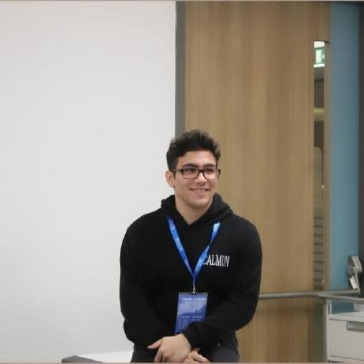

Mustafa DOĞAN
Industrial Engineering Student at Turkish-German University
I am an Industrial Engineering student specializing in AI/ML architectures, technical project leadership, and operations optimization. Through my academic and personal projects, I bridge the gap between engineering methodologies and modern AI solutions, with a strong focus on self-hosted LLM systems, mathematical modeling, and production-ready applications.

Education
B.Sc. in Industrial Engineering
Admitted from the top 0.5% of over 3 million students in the national university entrance exam. Joint curriculum in collaboration with the Technical University of Berlin.
- GPA: 3.01 / 4.00
- Board Member of the TGU Game Club (2023–2024)
- Active Member of the Industrial Engineering Club
High School Diploma
One of Turkey's most selective Anatolian high schools, admitting students from the top 0.1% nationwide.
- Graduation Grade: 93.66 / 100 (Graduated with Honors)
- Secretary-General of the Model United Nations (MUN) Club (2020–2021)
- Member of the Chess Club and Sports Festival Club
Skills & Languages
Technical Skills
- Python
- MATLAB
- PyTorch
- Scikit-learn
- Generative AI
- Flask
- Git & GitHub
- Agile & Scrum
Languages
- Turkish Native
- English C2
- German C1
- French A2
Experience
Software Engineering Intern
- Gaining hands-on expertise in enterprise telecommunications software systems, database integrations, and cloud-native containerized deployments.
- Developing Java backend services using Spring Boot, integrating relational databases (Oracle XE), and documenting API schemas using Swagger UI.
- Designing Python pipelines for automated data science workflows, real-time Computer Vision hand tracking, and natural language sentiment processing.
Fundamental Engineering Intern
- Completed a 15-day full-time mandatory internship focusing on manufacturing, tooling, and fabrication processes.
- Programmed and operated CNC machinery using G-code to fabricate steel components ensuring conformance to technical drawings.
- Collaborated in a 6-person team to construct a manually operated bending machine from scratch, managing dimensional control and production workflows.
Campus Ambassador
- Selected as one of over 100 volunteer campus ambassadors across Turkey to foster local collegiate gaming communities.
- Served as primary English-language Caster and Analyst for a nationwide summer gaming festival (1,000+ viewers, 15,000 TL prize pool).
- Organized 5+ university-wide esports tournaments, attracting an average of 50 student participants per event.
Articles
An engineering blueprint exploring how mapping software architectures into interactive 3D browser viewports using WebGL and Three.js solves diagram drift. This paper details collapsible JSON node schemas, 3D force-directed coordinate projection mathematics, and dual-rendered WebGL/CSS3D pipelines.
Read ArticleAn in-depth architectural exploration of self-hosted, multimodal agentic AI workflows. This paper analyzes token economics, compares deployment topologies (fully hosted vs. local on-premise), discusses execution sandboxing, and outlines hardware sizing calculations (ColPali, vLLM, and unified memory systems).
Read ArticleCertificates & Extra-Curriculars
Certifications
-
Python for AI & Dev Project
IBM -
Introduction to Prompt Eng.
IBM -
AI for Everyone
IBM -
BEST Engineering Competition
Yıldız Technical University
Activities & Engagement
Model United Nations (2014 – 2021): Participated in 20+ MUN conferences in various roles, including Committee Director, Academic Team Member, and Advisor.
"Türkçesi Varken" Project (Turkish Language Association): Voluntarily contributed to the localization of non-Turkish technical and daily terms into Turkish to promote linguistic clarity.